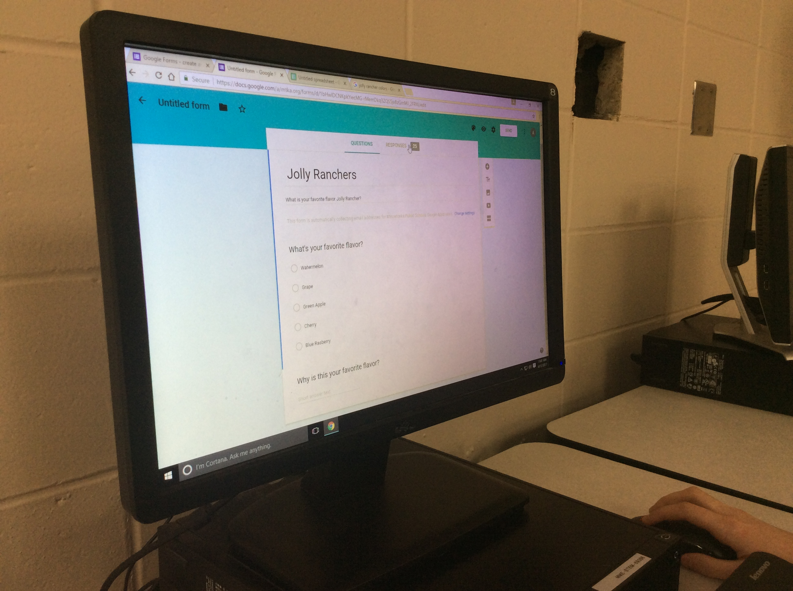

We made a survey asking peoples favorite flavor of Jolly Rancher and why? We used the main 5 flavors which were Watermelon, Grape, Blue Raspberry, Cherry, Green Apple.
 We took the survey an the results that came back was
- 40% of the people liked Watermelon the best and in a bag of Jolly Ranchers the percentage of Watermelon is 28%
- 20% liked Cherry the best and in a bag of Jolly Ranchers the percentage of Cherry is 18.9%
- 20% liked Green Apple the best and in a bag of Jolly Ranchers the percentage of Green Apple is 27.3%
- 10% liked Blue Raspberry the best and in a bag of Jolly Ranchers the percentage of Blue Raspberry is 18.2%
- 10% liked Grape the best and in a bag of Jolly Ranchers the percentage of Grape is 7.6%
Blue is Favorite - Red is Actual Flavors (for graph on the right)
We discovered that the company puts more of the ones people like (Watermelon) and puts less of the ranchers that people don't like (Grape) but the amounts are not as extreme as our survey responses.